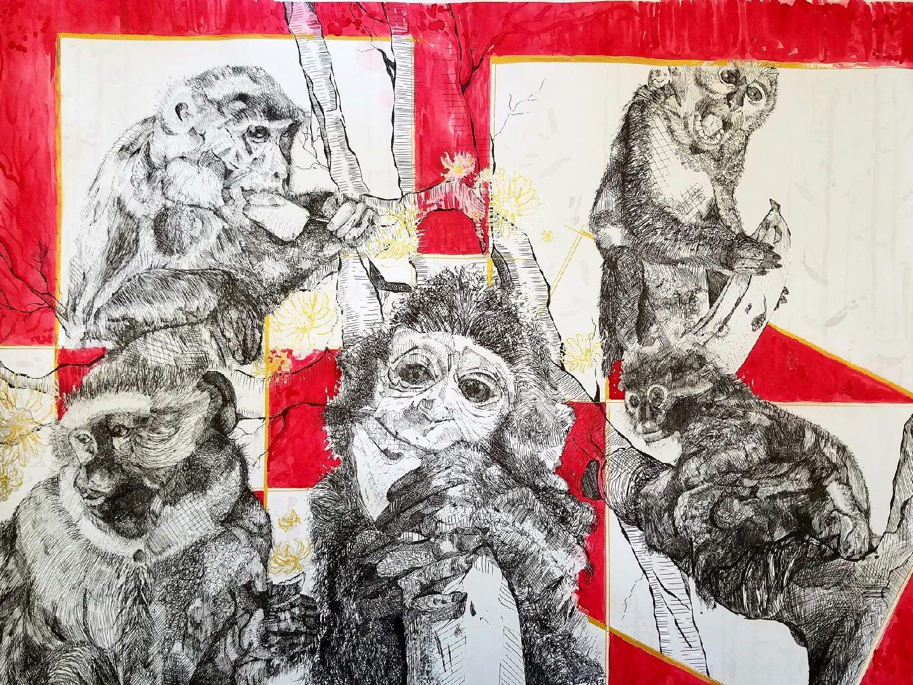
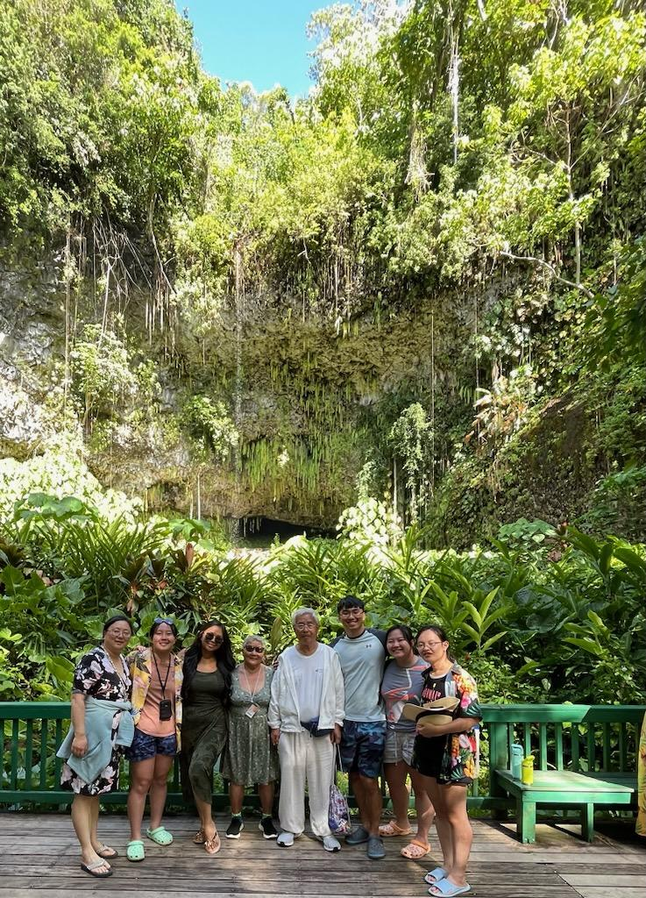

Making Art

I love using watercolor paints as well as Pen and Ink. The above piece was part of my larger portfolio. It is one of my favorite ones. Another thing I enjoy drawing are logos and simple captures of everyday life. For example, I used to make a lot of portraits for friends and family.
I use these experiences to build my creative repetoire as I aspire to enter into the marketing industry.
Traveling the World

My dream in the future is to travel all around the world and go on a food tour with my sisters. My family loves to take a really big trip together every summer. One of the places that I really want to go to one day is Greenland or Switzerland because I heard it is a very beautiful location.
Additionally, I plan on studying a summer abroad in NYU Shanghai.
As a college student living in the city, me and my friends often try new foods so here is a list of places I want to try!
Exercise
In the past, I have swam on both the high school varsity swim team in which we won Hockmock Championships every year and I placed tenth in the state for the 100 butterfly. Additionally, I swam competitively on the BlueFish Swim Club located in Attleboro. After the pandemic and going into college, I left my swimming career and have recently begun exercising well and taking better care of my health.